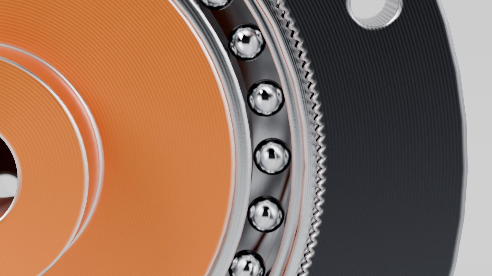

Interactive teardown · 互動拆解
Explode the parts, exaggerate the flex 20×, cut it open and watch the output turn once for every 100 input turns. Runs offline in one HTML file.
30-second product film · 30 秒產品片
The gear, its drawings, then every part going in along one axis and the stage running.
34-second tour of the interactive model · 34 秒互動模型導覽
Key figures · 關鍵數字
| Ratio | 100 : 1 (flexspline 200 teeth, circular spline 202, module 0.25) |
|---|---|
| Input / output | 3000 rpm in, 30 rpm out in the opposite direction; 7 N·m rated output |
| Tooth clearance | min radial gap 0.015 mm over 60,000 samples at 4 wave-generator angles; 3D boolean check: no interference |
| Mesh | 0.24 mm engagement on the major axis, about 97 teeth inside the overlap band |
| Flexspline fatigue | peak bending strain 5.7×10⁻⁴, root stress 234 MPa, Goodman n = 2.03 — 10⁹ cycles in about 116 days at full speed |
| Wave generator | 28.9 N to bend the cup, about 9.7 N per loaded tooth at rated torque |
Full results and what is not covered: analysis.json
Renders · 算圖



Engineering drawings · 工程圖


Third-angle projection, sections, balloons, parts list and tooth data. Click a sheet for the PDF.
CAD
STEP files open in any CAD program.